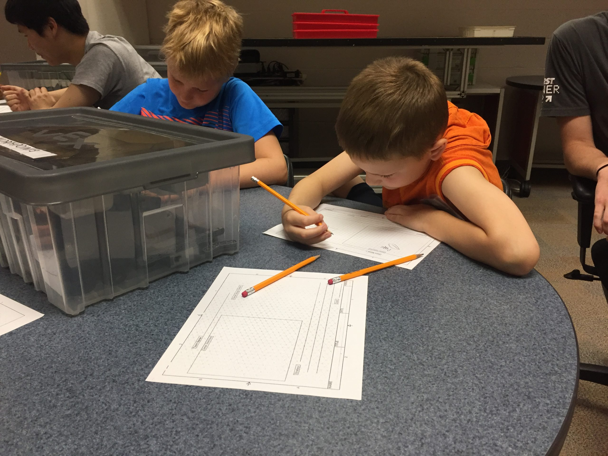
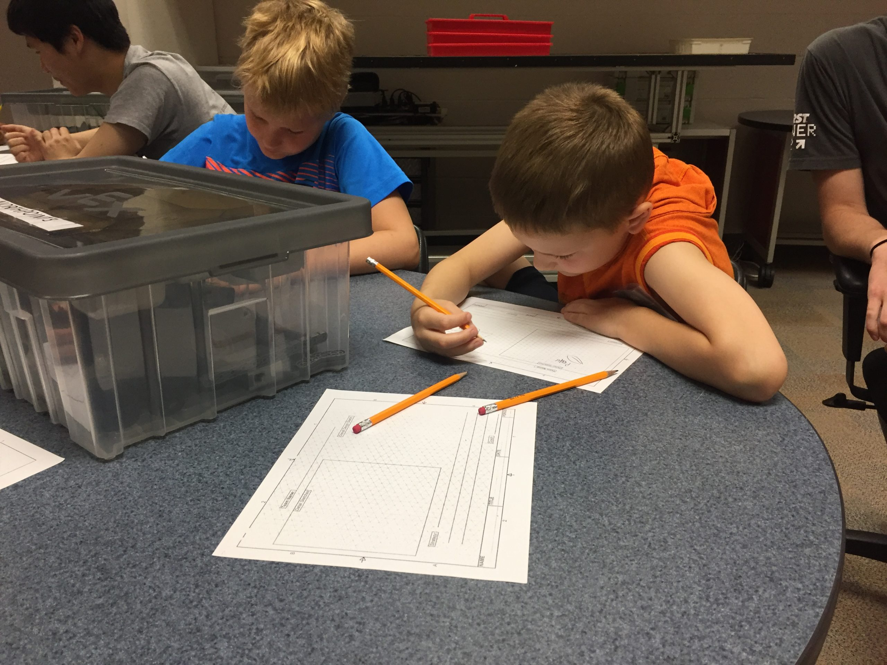

Summer Camps
We offer eight separate camps for students ages 1st through 8th grade. Skill levels differ from camp to camp, but there if your student is interested in STEM and robotics we most certainly have a camp for them!
We offer eight separate camps for students ages 1st through 8th grade. Skill levels differ from camp to camp, but there if your student is interested in STEM and robotics we most certainly have a camp for them!

In the camps, students work in teams to design, build and code a robot to complete various challenges. Each day, students are given a robot challenge such as lifting an object and placing in a specific location, completing an obstacle course, climbing an incline with weights, and more:

 
